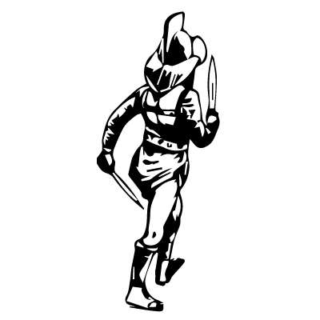

The dimachaeri were equipped for close-combat fighting. A dimachaerus used a pair of siccae (curved scimitar) or gladius and used a fighting style adapted to both attack and defend with his weapons rather than a shield, as he was not equipped with one. Little else is known about this class of gladiator, but due to the difficulty of wielding two swords it can be inferred that dimachaeri were highly skilled and experienced fighters, and were probably relatively exalted as a class of gladiator.